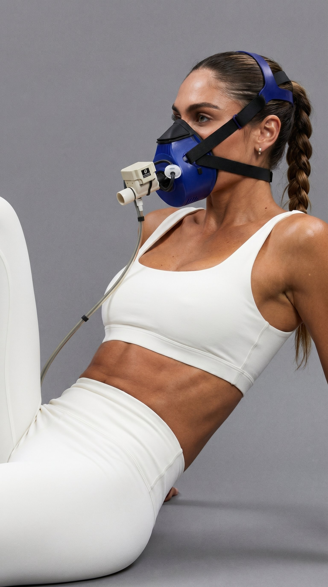
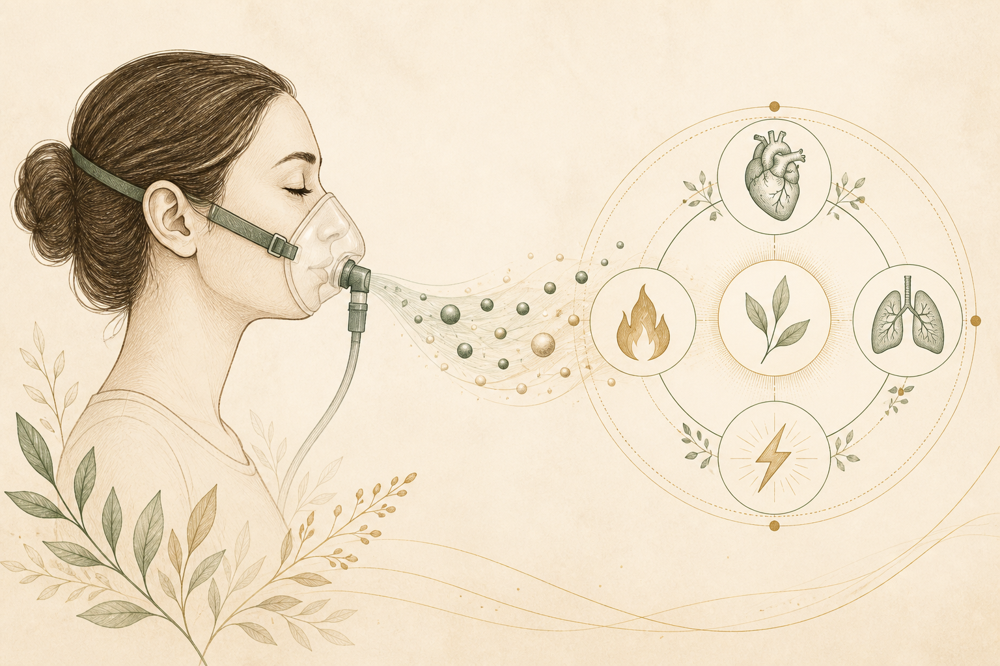
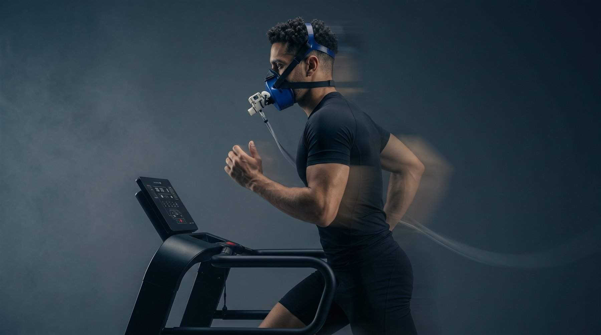

Advanced Metabolic Assessment
PNOĒ Metabolic Testing Client Handbook
Your breath reveals how your body uses oxygen and produces energy.
Measure · Understand · Personalize

What is PNOĒ?
PNOĒ is a clinical-grade breath analysis that measures the oxygen you use and the carbon dioxide you produce—at rest and during exercise.
Instead of relying only on estimates, it creates a personalized picture of your metabolism, cardiorespiratory fitness, fuel use, and breathing response.

One Test · A Clearer Picture
Key measurements in your personalized PNOĒ report
VO₂ Max
Your body’s ability to take in and use oxygen during exercise—a core measure of aerobic fitness.
Resting Metabolic Rate
Your measured daily energy expenditure at rest, rather than a calculator-based estimate.
Fat vs. Carb Use
How your body uses fat and carbohydrates for energy at rest and across exercise intensities.
Training Zones
Personalized heart-rate ranges to guide recovery, endurance, and higher-intensity training.
Breathing Efficiency
How your breathing responds as effort rises, helping explain stamina and exercise tolerance.
Metabolic Fitness Age
A motivating comparison and baseline for tracking changes in metabolic and aerobic fitness.

Choose the Assessment That Fits Your Goal
Your PNOĒ Experience
Breathe
Wear a light mask and breathe normally at rest or while completing a guided exercise test.
Analyze
PNOĒ analyzes oxygen and carbon dioxide in every breath.
Understand
Review your results in clear, practical language.
Personalize
Use your data to guide training, nutrition, recovery, and future re-testing.
Who Can Benefit?
- Weight & energy: understand measured calorie needs and fuel use.
- Athletes & runners: train with individualized zones and a clear aerobic baseline.
- Longevity-minded clients: track cardiorespiratory and metabolic fitness over time.
- Plateau-breakers: replace guesswork with objective data and new direction.
Before Your Test
- Follow the preparation instructions provided with your appointment.
- Wear comfortable clothing and athletic shoes for an active test.
- Tell the team about health concerns, symptoms, medications, or exercise limitations.
- Bring questions and be ready to discuss your goals.
Preparation may differ for resting and active assessments; your booking instructions are the source of truth.
Turn Your Results Into Direction
Comfortable & Non-Invasive
The assessment uses a fitted mask and breath sensor. The active test includes guided exercise appropriate to the selected protocol.
Wellness & Fitness Information
PNOĒ results are educational and are not a medical diagnosis or treatment. Consult a qualified healthcare provider before starting a new nutrition or exercise program or if you have medical concerns.